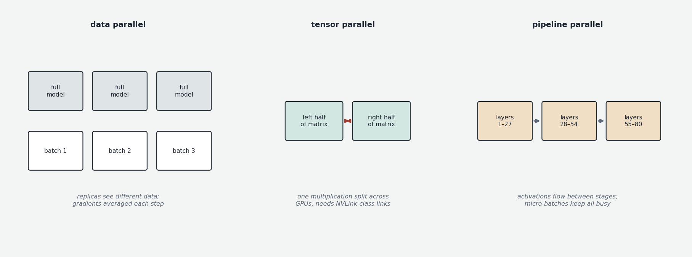
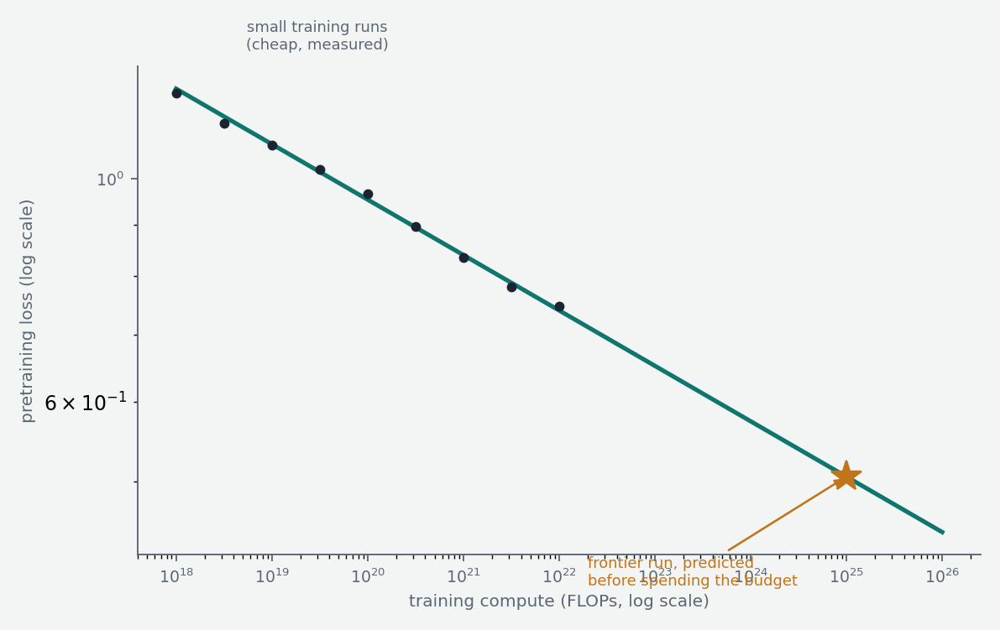

Chapter 1 described the training loop for one batch on one machine. Real pretraining runs that loop over trillions of tokens, across tens of thousands of accelerators, for months, at costs ranging from tens of millions to over a billion dollars. This chapter covers the three pillars of that enterprise: where the data comes from, how the computation is spread across hardware, and the empirical laws that tell you — before spending the money — roughly what you will get.
The data
The raw material of pretraining is text scraped from the public internet, and the foundational source is Common Crawl, a nonprofit that has been crawling and archiving the web since 2008, releasing multi-petabyte snapshots. Raw web text is, frankly, garbage on average: boilerplate navigation, spam, SEO sludge, duplicated pages, machine-generated filler, broken encodings. The transformation from raw crawl to training corpus is a large engineering effort in its own right, and data quality is widely believed to be one of the biggest differentiators between otherwise similar models — labs publish their architectures readily and their data pipelines almost never.
The pipeline has recognizable stages. Extraction pulls readable text out of HTML. Language identification sorts documents by language. Quality filtering discards junk, using heuristics (symbol-to-word ratios, document length, repetition) and learned classifiers — a common trick is to train a classifier to distinguish "text resembling known-good sources" (Wikipedia, books, highly-upvoted links) from random crawl, and keep only what scores well. Deduplication removes exact and near-duplicate documents, which matters more than it sounds: duplicated text causes memorization, wastes compute, and amplifies whatever happened to be duplicated. Decontamination removes documents that overlap with evaluation benchmarks, so that test scores measure ability rather than recall (Chapter 9 returns to how imperfectly this works).
The filtered web data is then blended into a mixture with deliberately chosen proportions of higher-quality sources: code repositories (GitHub), academic papers (arXiv), books, reference works, mathematics, and multilingual text. The mixture proportions are tuned empirically and matter a great deal — code, in particular, is included far beyond its natural web proportion because training on code measurably improves reasoning ability even on non-code tasks. Modern runs also often use curriculum effects: the final phase of training is run on the highest-quality slice of data, because what the model sees last it retains best.
Scale reference points: GPT-3 (2020) trained on roughly 300 billion tokens. Llama 2 (2023) on 2 trillion. Llama 3 (2024) on about 15 trillion. Recent frontier models train on tens of trillions, increasingly supplemented by synthetic data — text generated by other models, filtered for quality — because the supply of high-quality human text on the public web is finite and the leading labs have plausibly consumed most of it. Whether this "data wall" is a hard constraint or an engineering problem (solved by synthetic data, multimodal data, and better extraction) is an open and consequential question.
The compute arithmetic
A remarkably useful rule of thumb: training a transformer takes approximately 6 × N × D floating-point operations, where N is the parameter count and D is the number of training tokens. (Each token requires roughly 2N operations for the forward pass — every parameter participates in about one multiply-accumulate — and the backward pass costs roughly twice the forward, giving 6N per token.) Llama 3 70B at 15 trillion tokens is 6 × 7×10¹⁰ × 1.5×10¹³ ≈ 6×10²⁴ FLOPs. An H100 GPU delivers very roughly 10¹⁵ useful FLOPs per second in practice; 6×10²⁴ FLOPs is therefore about 6 billion GPU-seconds, or around 190 GPU-years — which is why such models are trained on clusters of 16,000+ GPUs for a couple of months rather than on any single machine for two centuries. Frontier-scale runs in 2025 use clusters of 100,000+ accelerators and budgets in the 10²⁶ FLOP range.
Spreading the work: parallelism
No single accelerator can hold a large model's training state (recall from Chapter 1: roughly 16 bytes per parameter, so ~1 TB for a 70B model, before activations), let alone perform the compute in reasonable time. Training is therefore distributed, and the strategies compose.

Data parallelism is the simplest: replicate the full model on many devices, give each device a different slice of the batch, run forward and backward independently, then average the gradients across devices before everyone takes the same step. This scales throughput linearly but requires each device to hold the entire model — fine for small models, impossible for large ones. The fix is sharded data parallelism (the ZeRO technique from Microsoft, implemented in PyTorch as FSDP, Fully Sharded Data Parallel): the parameters, gradients, and optimizer states are split across the devices, and each layer's full weights are gathered over the network just-in-time when needed, then released. Memory per device drops by the device count, at the cost of constant communication.
Tensor parallelism splits individual matrices across devices — half the columns of a weight matrix on one GPU, half on another — so that a single matrix multiplication is computed jointly. This requires extremely fast interconnect (the partial results must be exchanged within every layer), so it is typically confined to GPUs within one server connected by NVLink. Pipeline parallelism splits the model by depth — layers 1–20 on one group of devices, 21–40 on the next — with activations flowing between stages like an assembly line; micro-batching keeps all stages busy rather than waiting on each other. Expert parallelism (relevant for Mixture of Experts models, Chapter 5) places different experts on different devices.
A real frontier run composes all of these — tensor parallelism within a node, pipeline parallelism across nodes, sharded data parallelism across the whole cluster — and the binding constraint is usually communication, not arithmetic: the design problem is keeping tens of thousands of accelerators fed rather than idle. At this scale, hardware failure is routine (with 100,000 components, something fails constantly), so training checkpoints frequently and the infrastructure is built to detect dead nodes, swap them out, and resume — a months-long run is really thousands of resumed segments.
Scaling laws: predicting the outcome
The most strategically important empirical discovery about LLMs is that their performance is predictable. In 2020, Kaplan and colleagues at OpenAI showed that the pretraining loss falls as a smooth power law in each of three quantities — parameter count, dataset size, and total compute — over many orders of magnitude. Plotted on log-log axes, loss versus compute is close to a straight line. This transformed model development from alchemy into engineering: you can train a series of small models, fit the line, and extrapolate with useful accuracy what a 1,000× larger run will achieve. Frontier labs do exactly this; the small-scale experiments that precede a big run are largely about pinning down the scaling curve.

The follow-up question is allocation: given a fixed compute budget (remember, compute ≈ 6ND), should you spend it on a bigger model or more data? Kaplan's original analysis suggested heavily favoring model size, and the field followed — producing models like Gopher (280B parameters, 300B tokens). In 2022, the Chinchilla paper from DeepMind (Hoffmann et al.) redid the analysis more carefully and found the opposite: for compute-optimal training, parameters and tokens should scale in equal proportion, with roughly 20 tokens per parameter as the optimal ratio. They proved the point by training Chinchilla — 70B parameters on 1.4 trillion tokens, the same compute as Gopher — and beating Gopher across the board with a model a quarter of the size. Practically every model after 2022 reflects this correction.
But notice what "compute-optimal" optimizes: the best loss for a fixed training budget. It ignores inference cost entirely. A model that will be served to millions of users, or run continuously on local hardware, incurs cost proportional to its size on every single token it ever generates. It is therefore often worth deliberately overtraining a smaller model — spending more training compute than Chinchilla-optimal to cram capability into fewer parameters — because the inference savings repay it forever after. This is exactly what the Llama series and its peers do: Llama 3 8B trained on 15 trillion tokens is about 1,900 tokens per parameter, nearly 100× the Chinchilla ratio. The strikingly capable small models that run on laptops exist because the economics of deployment, not the economics of training, came to dominate design. Notably, the loss curves show no sign of saturation even at these extreme ratios — small models keep improving with more data, just with diminishing returns.
What the loss curve does and doesn't predict
Scaling laws predict the loss — the average next-token prediction quality — with remarkable precision. What they predict much less well is capabilities: performance on specific tasks like arithmetic, translation, or multi-step reasoning. A famous 2022 observation (Wei et al., "Emergent Abilities of Large Language Models") was that many task scores stay near zero across model scales and then jump sharply at some threshold — apparently discontinuous "emergence" of abilities, unpredictable from the smooth loss curve. A 2023 rebuttal (Schaeffer et al., "Are Emergent Abilities a Mirage?") argued that much of this sharpness is an artifact of all-or-nothing metrics: a task scored as "exact answer correct" looks like a cliff, while the model's underlying per-token improvement on the same task is smooth — partial credit was accruing invisibly all along. The truth appears to be somewhere in between: the underlying competence grows smoothly, but thresholded, real-world-relevant behaviors ("can it reliably write a working function?") genuinely do switch on within fairly narrow scale ranges, and predicting which abilities arrive at which scale remains beyond current science. This unpredictability is one of the central facts of the field — both its excitement and its governance problem.
The picture to keep
Pretraining is an industrial process with three inputs. Data: trillions of tokens of filtered, deduplicated, deliberately mixed text, whose curation is a guarded competitive advantage. Compute: roughly 6 FLOPs per parameter per token, spread across thousands of accelerators by composing data, tensor, and pipeline parallelism, with communication as the binding constraint. And a map: power-law scaling curves that let labs forecast loss before committing the budget, refined by Chinchilla's 20-tokens-per-parameter optimum, and then deliberately violated in the direction of overtraining because inference cost — not training cost — is what deployment actually pays for. The output of all this is a base model: a superb next-token predictor that is, as the next chapter explains, surprisingly far from being a usable assistant.